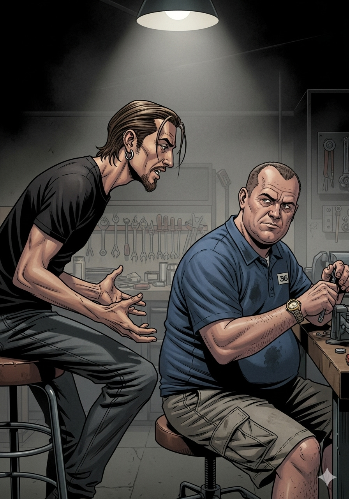

Escena 1 — El pitch

Un viernes de 1986. Un cuartel lleno de inútiles. Un sargento con ganas de pegar.
RULO
"Toni, Clint Eastwood de sargento veterano al mando de unos reclutas más perdidos que un calcetín en la secadora."
TONI
"¿Y hace qué? ¿Les enseña a disparar con voz bonita?"
RULO
"Les enseña a disparar soltando palabras que haría sonrojar a un camionero. Con cariño, eso sí."
Escena 2 — El sargento Highway

RULO
"Tom Highway. Veterano de Corea y Vietnam. Más condecoraciones que el uniforme tiene sitio. Y un carácter tan bueno como un día de lluvia en el desierto."
TONI
"¿Es de esos sargentos que gritan mucho pero en el fondo son buena gente?"
HIGHWAY
"Grita mucho. Y en el fondo también grita. Pero tiene su corazoncito."
Escena 3 — Los reclutas del apocalipsis

Cabo Stitch Jones y compañía. El pelotón más inútil del Cuerpo de Marines.
RULO
"Mario Van Peebles como el cabo Jones. Rockero, bocazas, convencido de que el ejército es una mierda y de que él es lo más. Exactamente el tipo que Highway necesita destrozar."
TONI
"¿Y les hace caso?"
RULO
"Les hace lo que Highway hace siempre: conseguir que funcionen aunque no quieran."
Escena 4 — El entrenamiento

TONI
"¡Rulo! ¡Este tío les está insultando en cuatro idiomas a la vez! ¡Eso no se puede decir en una película!"
RULO
"Es 1986, Toni. Puedes decir cualquier cosa si la dices con voz de Clint Eastwood."
El vocabulario de Highway. Clasificado. No apto para cardiacos ni para suegras.
¡ADAPT!
¡IMPROVISE!
¡OVERCOME!
— El mantra del sargento Highway. Y de Clint Eastwood en general. —
Escena 5 — La historia de amor

RULO
"Hay una subtrama romántica con su ex mujer, Aggie. Marsha Mason. Highway intenta reconquistarla leyendo revistas de mujeres para entenderlas."
TONI
"¿Clint Eastwood leyendo Cosmopolitan?"
RULO
"Es la parte más floja. No te voy a mentir. Pero tampoco estorba mucho."
Escena 6 — Las perlas del sargento

TONI
"¡RULO! ¡Ha dicho que son tan inútiles que no podrían organizar un follón en un burdel aunque tuvieran la cartera llena!"
RULO
"Eso es Eastwood. Frases lapidarias soltadas con cara de no haber roto un plato en la vida. El hombre tiene un talento especial para el insulto con clase."
Cada frase de Highway: un insulto, una lección y una sonrisa torcida. Por orden.
Escena 7 — Operación Granada

Octubre de 1983. La invasión de Granada. El momento de la verdad.
TONI
"Espera, ¿van a la guerra de verdad? ¿En Granada?"
RULO
"La invasión de Granada de 1983. Una operación real. Y el momento en que todos esos pardillos tienen que demostrar que algo han aprendido."
De inútiles a marines. Con muchos insultos por el camino.
"Aquí el que no hace bien su faena
se queda en el barro comiéndose los mocos."
— Sargento Highway. Más o menos.
Escena 8 — Highway vs el sistema

RULO
"Hay un oficial por encima de Highway, el Mayor Powers. Everett McGill. El típico burócrata militar que nunca ha pisado un campo de batalla y le pone trabas a todo."
TONI
"¿Y Highway le hace caso?"
RULO
"Highway hace lo que tiene que hacer. Siempre. El sistema que le rodea es su problema, no su límite."
Escena 9 — La transformación

El pelotón de los perdedores. Convertido en pelotón de marines de verdad.
RULO
"Lo que hace Eastwood con esta peli es lo que Highway hace con el pelotón: la coge rota, la ralla a base de bien y la devuelve funcionando. Con su magia particular."
TONI
"O sea que la comparas con La Chaqueta Metálica pero con más humor y menos drama."
RULO
"La Chaqueta Metálica pero que te puedes reír sin sentirte culpable."
¡HOSTIAS
COMO PANES!
— El método pedagógico del sargento Highway, 1986 —
Escena 10 — El Eastwood de siempre

TONI
"Rulo, es la típica peli de Clint. No reinventa nada. Pero Eastwood haciendo de Eastwood es suficiente para que funcione."
RULO
"Ahí está la clave. No te viene a sorprender. Te viene a dar lo que esperas del tío, bien hecho, con diálogos que se te quedan grabados y sin andarse con tonterías."
Eastwood no es un actor. Es una institución con cara de mala leche.
Escena 11 — El veredicto

Al final de la función. Dos colegas que saben lo que han visto.
RULO
"Entretenida, bien hecha, con un personaje central que ya es leyenda. La historia de amor no termina de funcionar pero el núcleo —Highway, el pelotón, el humor— aguanta perfectamente."
TONI
"Para los amantes de la acción con humor y faltadas por todas partes."
RULO
"Para los amantes de Eastwood en general. Que somos muchos."
★ Veredicto de Rulo y Toni ★
7.5
EL EASTWOOD DE SIEMPRE.
Y ESO ES SUFICIENTE.
La típica película de Clint: frases lapidarias, hostias como panes y un corazoncito escondido
detrás de dos metros de mala leche. El sargento Highway ya es personaje de leyenda, los diálogos
son para enmarcar y la transformación del pelotón funciona sin forzar nada. La historia de amor
es la parte más floja, pero el conjunto tiene la suficiente energía y humor para que no importe
demasiado. Peli para el finde, con palomitas y ganas de reírte. Sin más pretensiones. Sin falta.
Acción bélica
Comedia negra
Warner Bros. · 1986
Clint Eastwood
Mario Van Peebles
Marsha Mason
Heartbreak Ridge